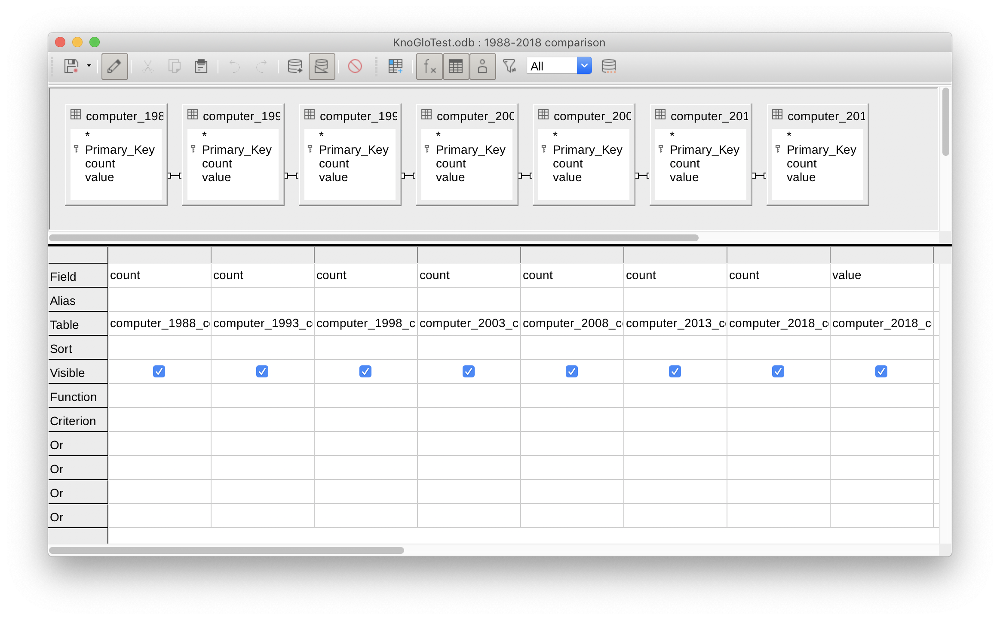
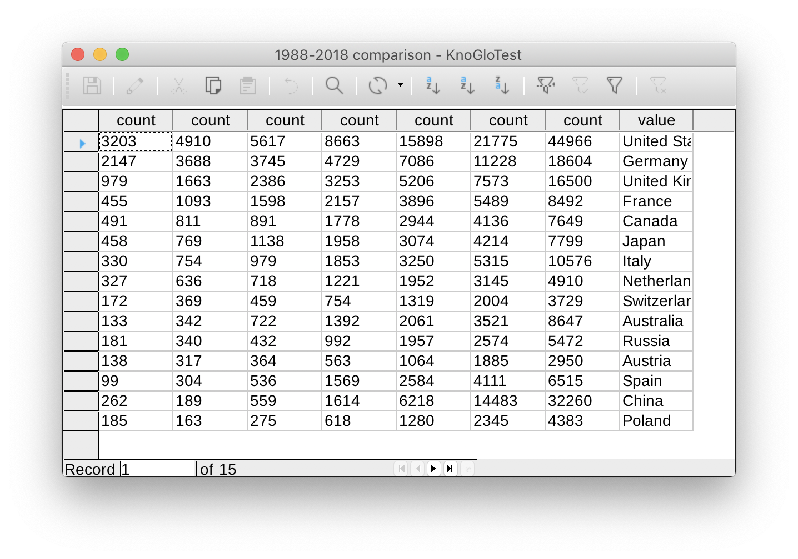

How do KnoGlo works?
Gather and create data. Data management. Data visualization.
Our goal is to create datasets of the statistics of academic publications from all over the world, manage, and visualize them.
Where to get the data?
Our tool is able to gather information from Springer, which is one of the world's leading scholar database. Powered by Springer Nature metadata API that provides metadata for academic and professional publications, we could access 12 million online documents, including journal articles, book chapters, and protocols. Using these data, we could analyze the statistic information about how many articles published in selected topic and time ranges.
See how the raw data output looks like, with the example of output
How to get the data? (research challenge)
First things first, of course, we need to get the data from Springer Nature.
This is also my major research challenge. Springer Nature Metadata API provides raw data in JSON format. We build a tool in Python, which could gather the data from the JSON raw data filtered by topic and year.

The JSON data consists of several sets of data, including one that we need to use, which is “facets”. It includes the statistical data shows how many articles were published for each subject, keyword, country, publisher, and type (books or journals). In other words, we need to process the data from these six attributes in “facets”. Inside each attribute, there are two types of variables: “count” and “value”. “Count” represents the number of publications associated with each “value”.
REQUIREMENT - In order to test KnoGlo by yourself, you need to request a Springer Nature API Key. Learn more about Springer Nature API and how to get your unique key.
Another research challenge is how to organize these data.
After gathering data, the Python tool will create 6 datasets for each element in “facets”. The dataset consists in two columns, “count” and “value”. For each attribute, the Python tool will make two lists for “count” and “value” and then generate a CSV file. Each column contains data for each list.
Big thanks to Lanfei Liu, who built a tool in Python using Springer Metadata API and other APIs in order to generate literature review data. By learning her code, I figured out how to gather data from the Springer metadata JSON output using Python with filters (query), manage these data, and create & write CSV files by columns.
Take a look at Knoglo's Python code.
How to manage data?
For specific cases, we would like to make comparisons between years and see how the number changes.
For example, to see the change in the number of publications about the computer from several countries between 1988 and 2018 (per 5 years). After we created the dataset for 1988, 1993, 1998, 2003, 2008, 2013, and 2018, we’d like to merge these seven datasets in one. We can implement this using LibreOffice by creating a query.
 How to visualize data?
Once we have the data, we can visualize it as graphs using R programming language, which could tell you the results in an intuitive way and even tell you stories in a selected time and space.
See our visualization examples, and take a look at Knoglo's R code.